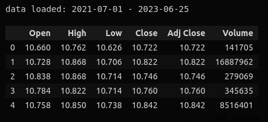
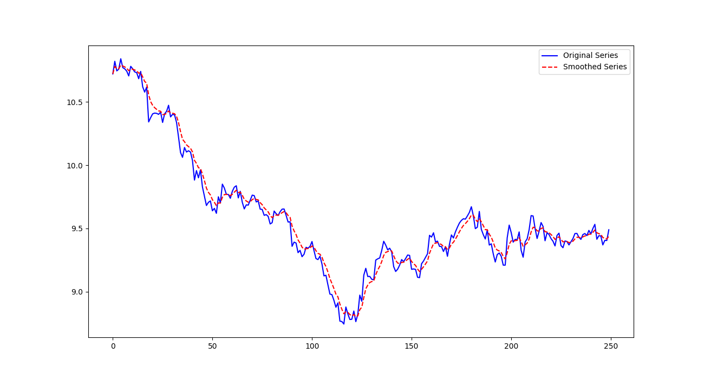
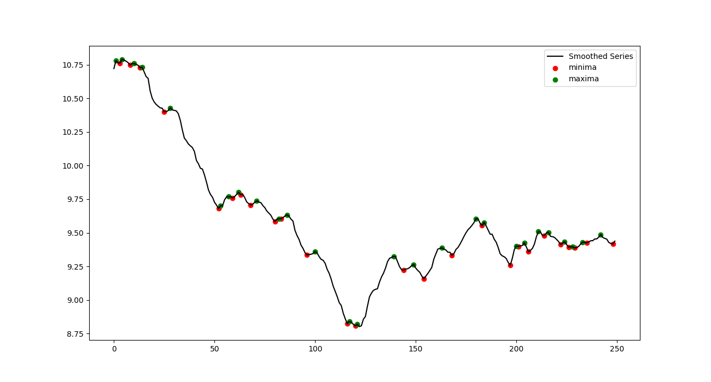
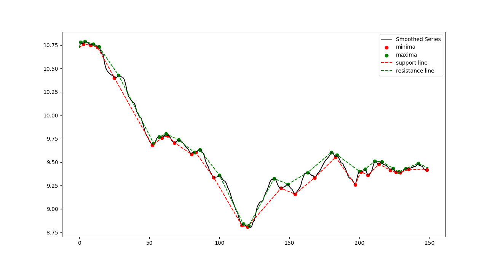

The data for the model includes two streams: numeric data and text data. The numeric data consists of prices and volume for the target stock, as well as prices and volume for related stocks and numeric values for financial indicators. On the other hand, the text data comprises news, reports, and social media posts. The model's fitting is based on several financial objects, including stocks, financial market indices, raw market indices, and currencies. The use case of the model is to refit it at the end of a day and get forecast for the close price the next day. The step is one hour.
In the analysis of numeric features, I begin by selecting one of the blue chip stocks. To obtain the necessary data, I utilize the yahoo finance API package. I initiate a ticker class, which consists of properties such as the stock symbol and historical price data. The dataset can be obtained by either downloading the data from yahoo finance or reading the data if it has already been downloaded.
class Ticker:
def __init__(self, symbol:str):
self.symbol = symbol
self.history = pd.DataFrame(dtype=object, columns=['Open','High','Low','Close','Adj Close','Volume'])
def yf_download(self, start_date: str, end_date: str, interval: str):
self.history = yf.download(
tickers=self.symbol,
start=start_date,
end=end_date,
interval=interval
)
path = f"{configur.data_path}{self.symbol}_{start_date}_{end_date}.parquet"
self.history.to_parquet(path, index=False)
print(f"File saved at {path}")
return self.history
def upload_history(self, start_date: str, end_date: str):
path = f"{configur.data_path}{self.symbol}_{start_date}_{end_date}.parquet"
self.history = pd.read_parquet(path)
print(f"History loaded: {start_date} - {end_date}")
return self.history
The resulting dataframe contains source data for the further calculations:
Support and resistance lines are one of the crucial methods in technical analysis for predicting future price movements in financial markets. To identify support and resistance lines a combination of exponentially weighted calculation and statistical analysis is used. The process involves smoothing the price line, identifying local minima and maxima, and calculating slope and intercept coefficients.
The price line is smoothed using an exponentially weighted calculation by the means of pandas method - DataFrame.ewm. This step reduces noise and provides a clearer representation of the underlying price trends.
def get_smooth(self, series_name:str=configur.series_name, smoothing_factor:float=0.3):
# smooth the series with the defined factor
smoothed_series = self.data[series_name].ewm(alpha=smoothing_factor).mean()
# append to the data
self.data["smoothed_series"] = smoothed_series
return smoothed_series

The next step involves identifying local minima and maxima, which are key points for determining support and resistance levels. The scipy library in Python offers the argrelextrema function for detecting local extrema in a given dataset. By applying this function to the smoothed price line, we can identify the significant peaks and valleys in the data. To ensure a smoother representation of support and resistance lines, an additional rule is implemented. Consecutive extrema that are within a distance of two steps are considered as redundant and thus excluded. This rule eliminates unnecessary noise and enhances the clarity of the final support and resistance lines.
def get_extrema(self) -> tuple:
# get local minima and maxima of the smoothed series
smoothed_series = self.get_smooth()
# get extrema
local_min_idx = argrelextrema(smoothed_series.values, np.less)
local_max_idx = argrelextrema(smoothed_series.values, np.greater)
# drop extrema if the distance to the previos ones <= 2 periods
local_min_idx = np.delete(
local_min_idx[0],
np.argwhere(np.diff(local_min_idx[0]) <= 2) + 1
)
local_max_idx = np.delete(
local_max_idx[0],
np.argwhere(np.diff(local_max_idx[0]) <= 2) + 1
)
# append to the data
self.data["local_min"] = smoothed_series[local_min_idx].combine_first(
pd.Series(0, index=range(len(smoothed_series)), name="local_min")
)
self.data["local_max"] = smoothed_series[local_max_idx].combine_first(
pd.Series(0, index=range(len(smoothed_series)), name="local_max")
)
return (local_min_idx, local_max_idx)

Finally, the resistance and support lines are derived by calculating the slope and intercept coefficients. The scipy library provides the linregress function, which fits a linear regression model to the identified extrema points.
def get_support(self):
local_min_idx, _ = self.get_extrema()
# append start / end points
local_min_idx = np.insert(local_min_idx, 0, 0)
local_min_idx = np.append(local_min_idx, self.data.index[-1])
# get support
support_line = list()
for i in range(len(local_min_idx)-1):
support_line.append(util.get_line(
local_min_idx[i],
local_min_idx[i+1],
*util.get_coefs(
local_min_idx[i],
local_min_idx[i+1],
self.data["smoothed_series"][local_min_idx[i]],
self.data["smoothed_series"][local_min_idx[i+1]]
)
))
support_line = np.array([x for sl in support_line for x in sl])
# append to the data
support_line = pd.Series(
support_line[:,1], index=support_line[:,0].astype(int), name="support_line"
)
support_line = support_line[~support_line.index.duplicated()]
self.data["support_line"]=support_line.combine_first(
pd.Series(0, index=self.data.index, name="support_line")
)
return support_line
